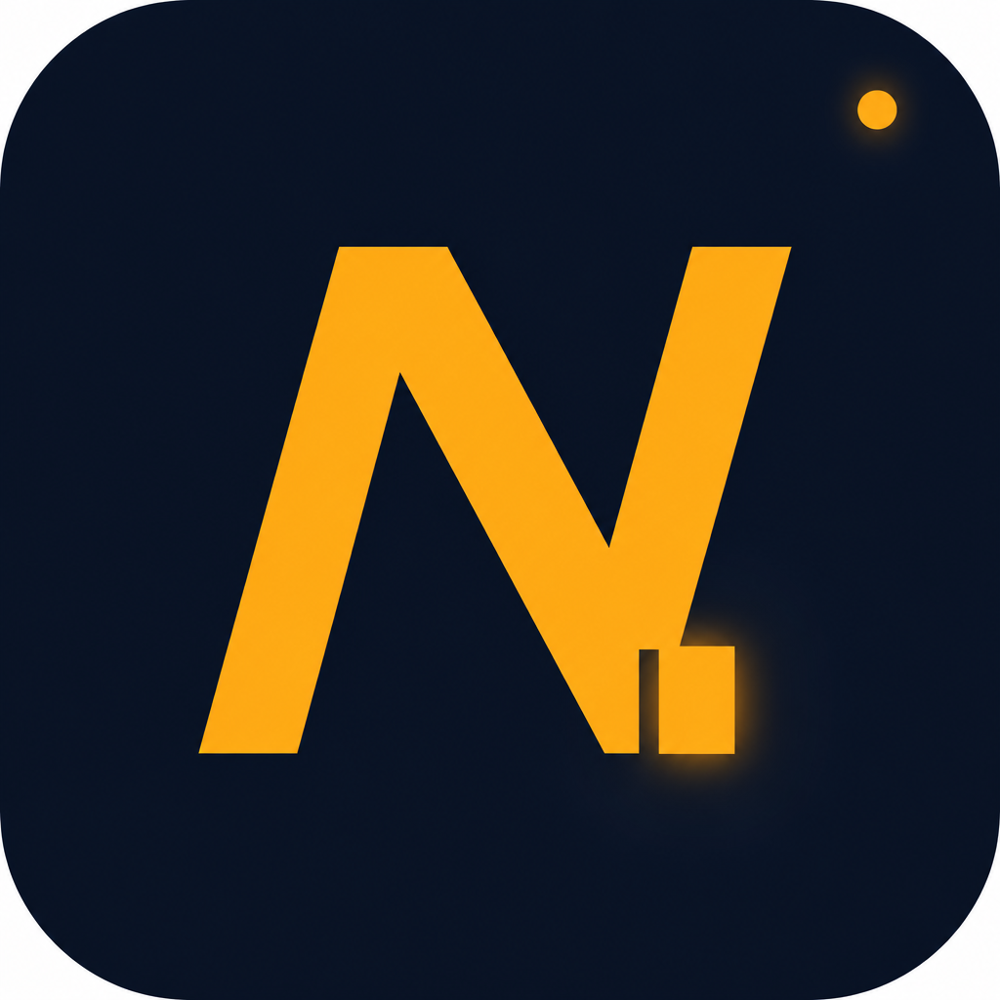

NTermSecureCRT sessions. PuTTY-grade SSH to Cisco, Palo Alto, and Fortinet. Warp-style AI. Built-in syslog, TFTP, and DHCP — like Kiwi and TFTPD32, in one install.
nterm.ai · also Docker: docker compose up --build
Saved sessions, usernames, passwords, enable secrets. Encrypted on disk.
Send one command to a tab, a customer, or every open session.
Enable syslog, TFTP, DHCP + option 150. Analyze a show run.
Paste an OpenAI key. Hook MCP servers. The model sees the session.